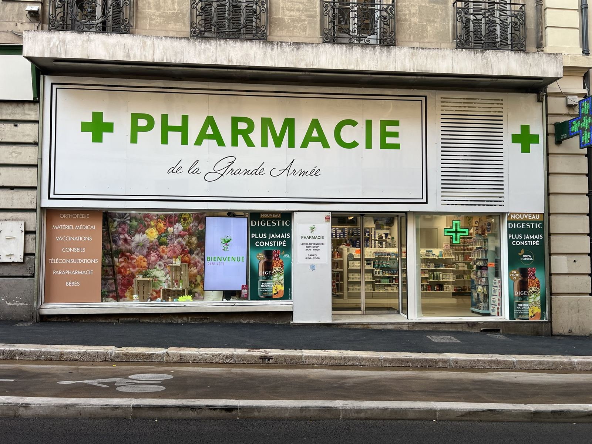
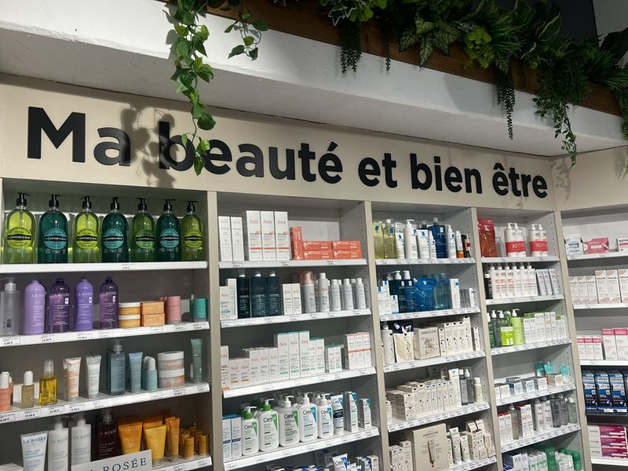

Pharmacie de la Grande Armée
Au 6 rue de la Grande Armée, dans le 1er arrondissement. Ouverte du lundi au vendredi sans interruption de 8h30 à 19h30, et le samedi matin.
Vous pouvez réserver vos produits de parapharmacie ici et passer les chercher au comptoir quand ça vous arrange.
Click & collect
Réservez en ligne, payez et retirez sur place
Pas de frais de livraison, pas d'attente au comptoir pour chercher le produit : il est préparé à votre nom.
Vous choisissez
Ajoutez les produits au panier depuis la boutique. Pas besoin de créer de compte.
On prépare
L'équipe vérifie la disponibilité et vous rappelle ou vous écrit si un produit manque.
Vous passez
Vous réglez au comptoir au moment du retrait. C'est aussi l'occasion de poser vos questions.
À l'officine
Ce que l'on fait pour vous
Au-delà de la délivrance des ordonnances, voici ce que vous pouvez trouver chez nous. Pour la plupart de ces services, le plus simple est de passer ou d'appeler.
Conseils
Un rhume qui traîne, une peau qui réagit, un traitement à associer à un autre : on prend le temps d'en parler.
Vaccinations
Grippe, Covid-19 et d'autres vaccins selon votre âge et votre situation. Renseignez-vous au comptoir.
Téléconsultations
Consultation vidéo avec un médecin depuis la pharmacie, quand vous ne trouvez pas de rendez-vous rapidement.
Orthopédie
Ceintures lombaires, chevillères, genouillères, bas de contention. Prise de mesures sur place.
Matériel médical
Location et vente : fauteuils roulants, déambulateurs, lits médicalisés, tensiomètres…
Bébés
Laits infantiles, puériculture, soins du nourrisson, tire-lait. Et des réponses pour les jeunes parents.
Parapharmacie
Soins visage et corps, solaires, hygiène, compléments alimentaires. Une partie est disponible en réservation.
Boutique
Quelques produits à réserver
Une sélection de ce qu'on nous demande souvent. Le reste est dans la boutique, et si vous ne trouvez pas, demandez : on commande en général sous 24 h.

Beauté & bien-être
Un rayon dermo-cosmétique complet
On a fait le choix de marques de pharmacie qu'on connaît bien et dont on peut expliquer les différences : pour une peau atopique, une peau grasse, un enfant, une grossesse.
- Avène
- La Roche-Posay
- CeraVe
- SVR
- Embryolisse
- La Rosée
- Le Comptoir du Bain
- Saforelle
- Saugella
- MAM
L'équipe
Dr Emilie Clevers-Tawfik et son équipe
Pharmacienne titulaire de la Pharmacie de la Grande Armée, le Dr Clevers-Tawfik vous accueille avec son équipe du lundi au samedi. On parle français et anglais.
[À compléter : quelques lignes sur l'équipe — depuis quand la pharmacie est reprise, combien de personnes au comptoir, une spécialité ou une formation particulière (orthopédie, micronutrition, aromathérapie…).]
Infos pratiques
Horaires et accès
| Lundi – vendredi | 8h30 – 19h30 (sans interruption) |
|---|---|
| Samedi | 8h30 – 12h30 |
| Dimanche | Fermé |
Adresse
6 rue de la Grande Armée
13001 Marseille
Téléphone
04 91 62 36 31